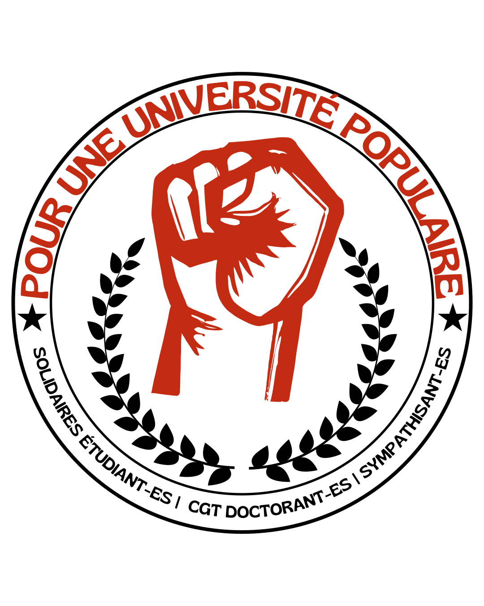
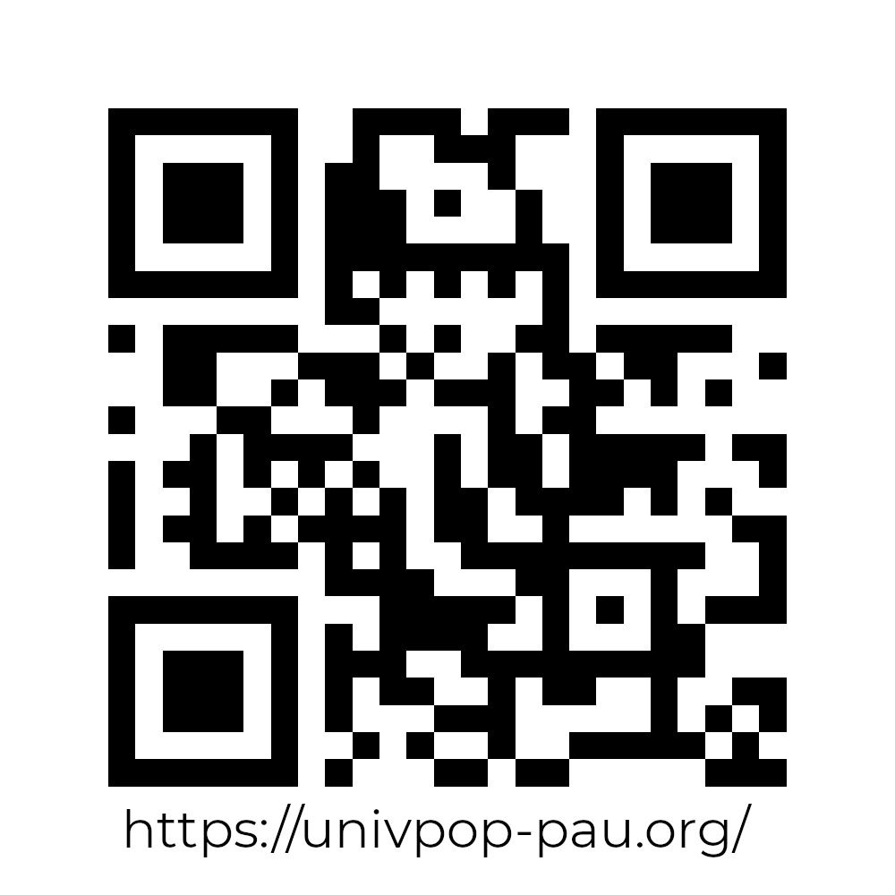

Université gratuite, émancipatrice, de proximité
Collège STEE

Programme complet sur
univpop-pau.org
Le 23 et 24 novembre 2026, nous votons pour élire nos représentant⋅es au sein des différents conseils de l’université. Nous sommes engagés pour une vie étudiante digne, pour une université égalitaire et inclusive, pour un service public de qualité, une université durable et une diversité culturelle, pour une recherche pérenne, diversifiée et indépendante.
L'égalité des frais d'inscription ; le renforcement du service de santé ; la mise en place de services concrets luttant contre la précarité matérielle comme un réseau de transport de nuit, des services de proximité CROUS (coiffeur, laverie automatique...).
Une université pleinement accessible (aménagements du bâti, preneur·ses de notes, sensibilisation au handicap) et engagée contre les discriminations et les VSS (formation du personnel, écriture inclusive, prénom d'usage automatique et présence des syndicats au sein des cellules d'accompagnement).
Pas de représentant·es d'acteurs privés dans les conseils ; la suppression de Parcoursup et de la sélection à l'université ; le droit aux rattrapages et à la compensation pour toutes et tous ; tous les cours mis en ligne. soutien à la vie associative et développement des échanges entre les campus ainsi qu'à l'international. la démocratisation du vélo sur les campus.
des contrats doctoraux sur fonds ministériels et l'exonération des frais d'inscription pour tou·tes les doctorant·es ;
des postes titulaires et la titularisation des contractuel·les ;
On compte sur vous pour les 23 et 24 novembre !